Note: this method does not provide sample data installation.
Template preparation
Before you proceed, please make sure you have already downloaded the template and
extracted the files from the template package. You can check detailed tutorials on
how to extract files from the template package using WinZip and StuffitExpander.
When the files are extracted, you can proceed to uploading the template.
Your server settings should meet Prestashop requirements, especially:
max_execution_time should be set to at least 300 on the server.
PHP version should be 7.2 for the best performance.
Installation
Log into your PrestaShop admin panel and navigate to Design ->
Theme & Logo. At the top of the page click Add new theme button (1).
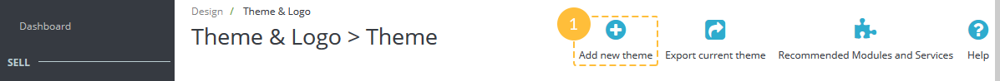
Click Add file button (1) in Import from your computer section. Navigate
to previously unzipped template package and open themeinstallator
folder.
Select your theme .zip file and click Save (2).
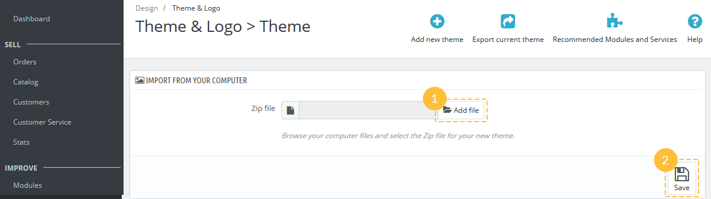
The uploading process will be started. You will see the message that the theme has
been successfully uploaded. Your new theme preview will appear in the list of
installed themes.
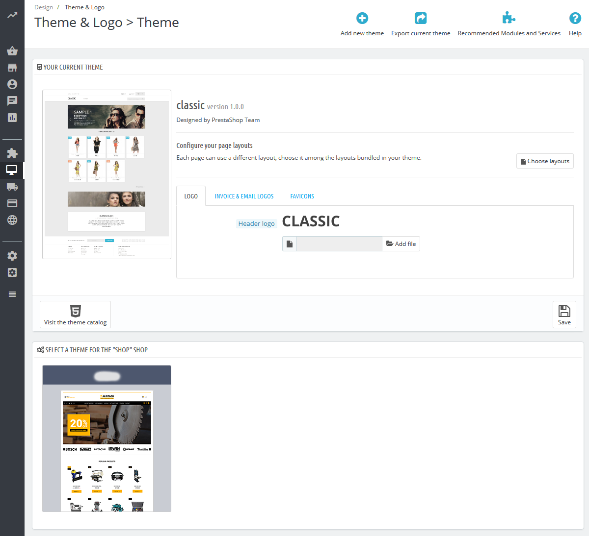
In order to activate the theme, hover the cursor over the theme preview icon and
click Use this theme.
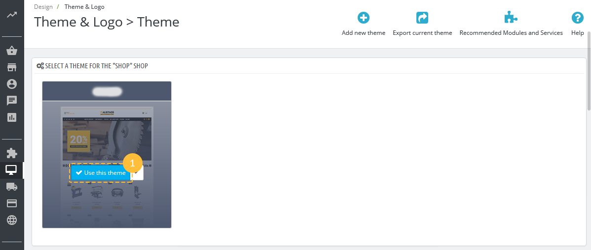
Automatic installation with demo data (Sample data installer)
To make your PrestaShop store appear the same as template live demo, you need to install sample data.
It will contain all demo products, categories, modules and store settings.
Please make sure that the Debug Mode is switched off before you proceed to Sample Data Install -> Import Data.
Also, make sure your database tables prefix is ps_ for sample data to apply to the site. (You can check it in Advanced Parameters > Information.)
If you have your own content, select only Modules during sample data installation so your content stays and only theme modules demo content is installed:
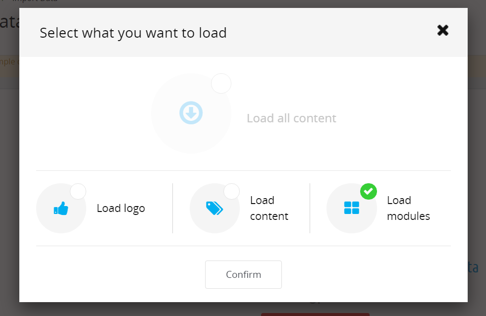
Be sure that your version of PrestaShop engine matches the specified version in "Software version" area on the template page, mentioned as "PrestaShop 1.7.X.X".
In order to install sample data using the Sample data installer module, please follow instruction from the step 1
(Theme import) of this manual. Then in your store admin panel you'll see Sample data installer module.
Using this module you can easily install store sample data in few easy steps. Please do the following:
From the admin panel menu click "Install Demo Store" item.
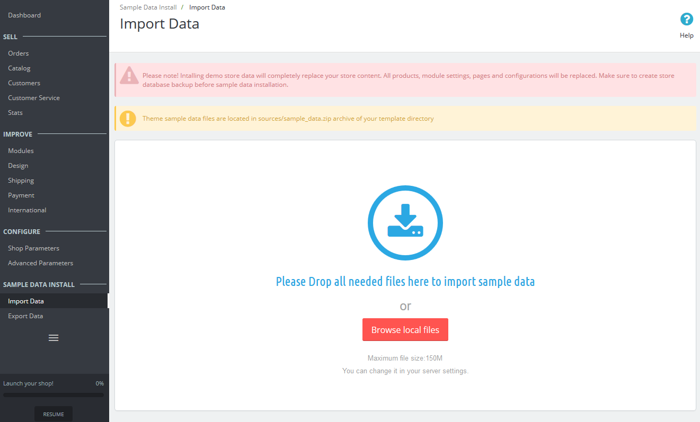
Select and upload sample data files from 'sample_data' directory of your template package.
You can do this using the "Browse local files" button or dragging sample data files to the
browser window.
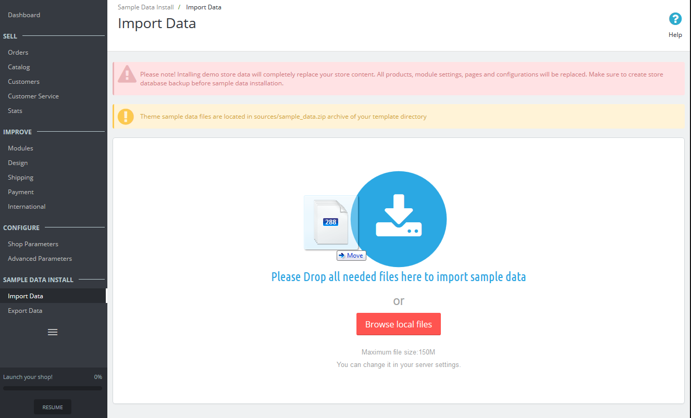
You will see the pop-up window offering different types of sample data installation. By default it's set to
'Load all content' type (1). This means that all sample data will be imported to your store. If that's what
you need, click the 'Confirm' button.
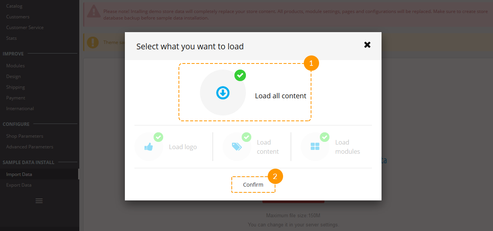
If you do not need to install all sample data, uncheck 'Load all content' (1), choose from the required
options below by checking options the same way (2) and confirm your choice (3).
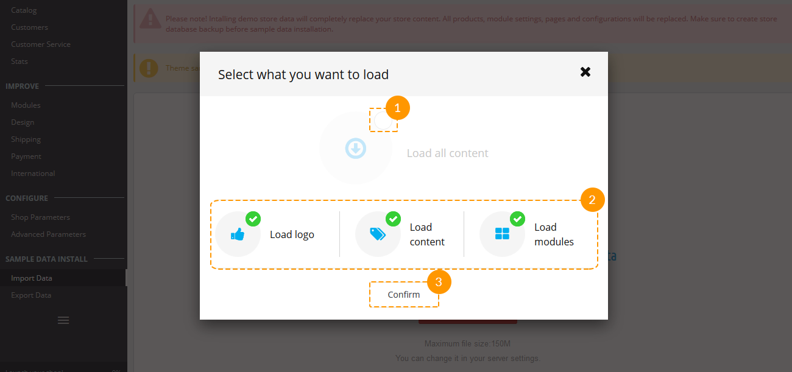
Wait until the files are uploaded.
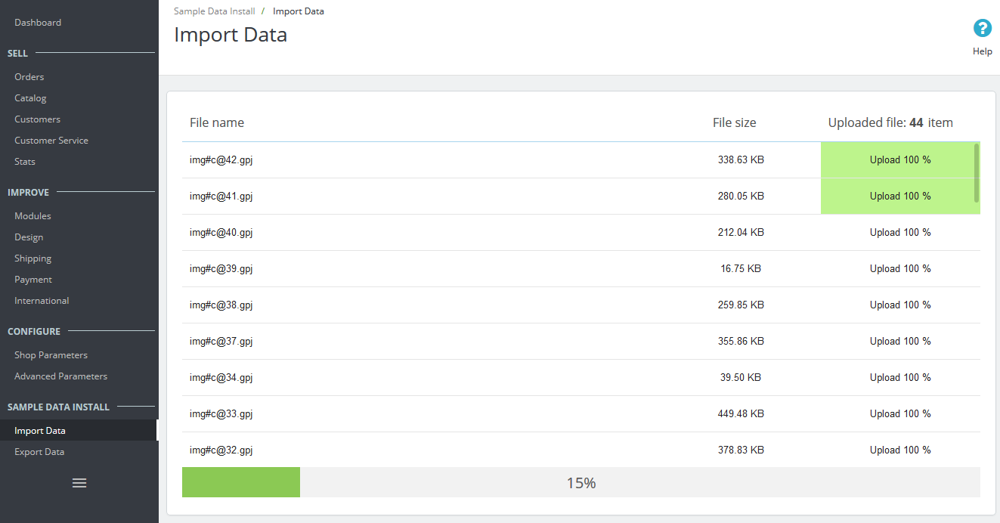
Then click "Continue Install" button.
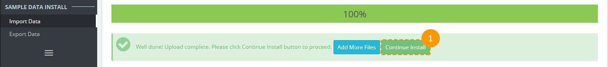
Then Sample data installer will automatically configure your store and other modules. This can take several
minutes.
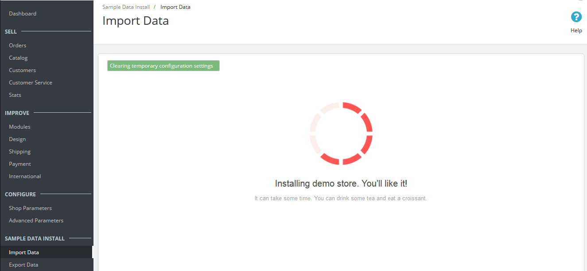
When sample data is installed successfully, you need to perform the last step - regenerate images.
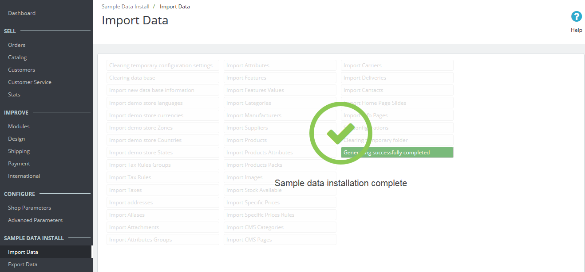
Click "Go To Regenerate Page" button at the bottom of the page.
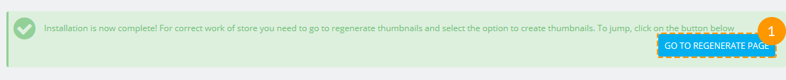
To regenerate images click "Regenerate thumbnails" button.
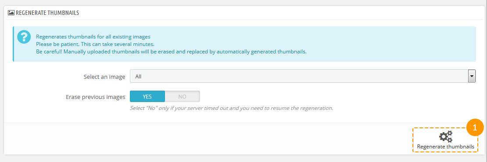
Congratulations, your demo store is installed.
Installation of the template with sample data via FTP
If you don't want to spend your time installing the template, don't hesitate to order installation service using our
live-chat.
To make your PrestaShop store appear the same as template live demo, you need to install sample data.
It will contain all demo products, categories, modules and store settings.
Please do not use the sample data for your running website! This will replace all your
store products and store settings.
Please make sure your version of PrestaShop engine matches the specified version in
"Technical Details" tab, mentioned as "PrestaShop Engine: 1.X.X.X".
Also, make sure your database tables prefix is ps_. Install sample data only if your PrestaShop
engine matches the specified version.
You can install sample data via FTP with ease saving your time. You just need to follow the instruction from the step
1
(Theme import) of this manual.
Please, do the following:
Open the template package.
Go to the /theme/sample_data/ folder.
Copy ALL the sample data files and paste them to the themeXXXX/modules/sampledatainstall/input/
folder in your PrestaShop root directory.
Now, in your PrestaShop admin panel menu click "Import Data" item.
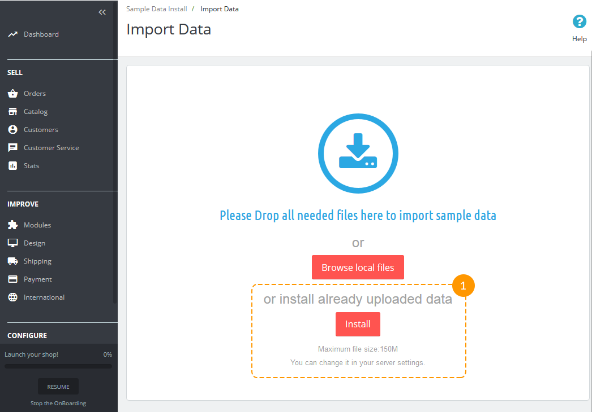
Wait until the Sample Data Installer configures your store and other modules.
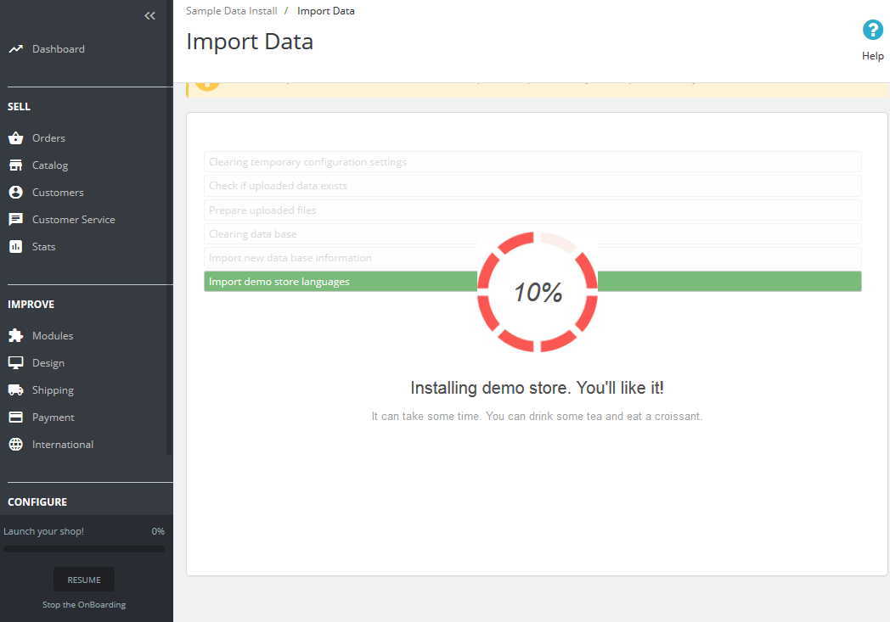
Sample data is installed successfully!
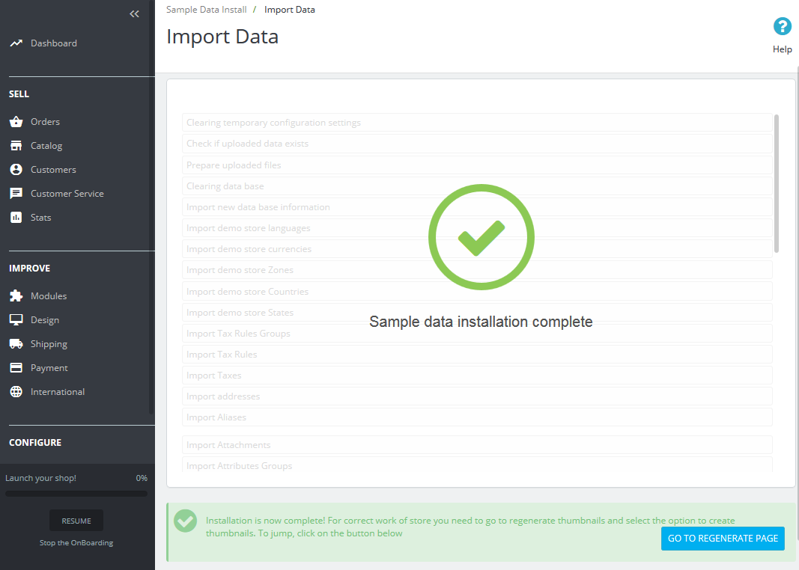
The last step is the images regeneration. Click "Go To Regenerate Page" button at the bottom of the page.
To regenerate images click "Regenerate thumbnails" button.
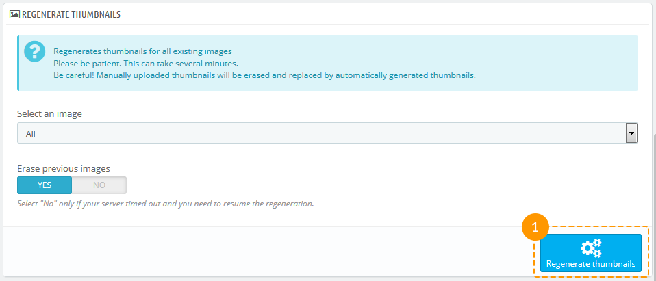
Congratulations, your demo store is installed.
Manual template installation with sample data
To make your PrestaShop store appear the same as template live demo, you need to install
sample data.
It will contain all demo products, categories, modules and store settings.
Please do not use the sample data for your running website!
This will replace all your
store products and store settings.
Please make sure your version of PrestaShop engine matches
the specified version in
"Technical Details" tab, mentioned as "PrestaShop Engine: 1.X.X.X".
Also, make sure your database tables prefix is ps_. Install sample
data only if your PrestaShop engine matches
the specified version.
Uploading template files
To upload the template to your server:
Open the template package.
Then go to the /theme/manual_install/ folder.
Upload /img/, /modules/ and
/themes/ folders to PrestaShop root directory.
You may upload the files for manual installation here.
You can check the detailed video tutorial on how
to upload files to server using FTP manager and how to upload files to a server using cPanel (WebHost Manager,
WHM).
Installing Sample data
Sample data is provided as an .SQL file. It is located in the theme/manual_install/
of the template package and is called dump.sql.
The dump.sql file can be installed using the phpMyAdmin tool or some other database
management tool in your hosting control panel. This detailed tutorial on how
to install SQL files can help you.
Before you proceed, please back up your database.
Please make sure your version of PrestaShop engine matches the
template requirements.
Otherwise, the database will be damaged.
When you are done with installing the dump.sql file, you will need to activate the
template.
From the PrestaShop admin panel, go to Design > Theme & Logo, choose
your template in the Themes section and click 'Save'
button.
Adding languages to online store
Once the multi-language template is installed, you will be able to add all
languages provided with it (English, French, Spanish, German, Russian) to the online
store platform. It can be done this way:
Go to 'International > Translations' in the admin panel, find
'ADD/UPDATE A LANGUAGE' and add languages by choosing them from the
drop-down menu
(1)
and clicking the 'Add or update a language' button
(2)
.
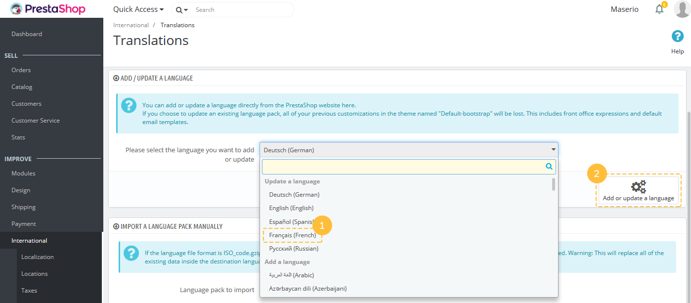
If you do not want to have some languages, you can delete them
(2)
or turn them off
(1)
in the 'International > Localization > tab Languages'
menu.
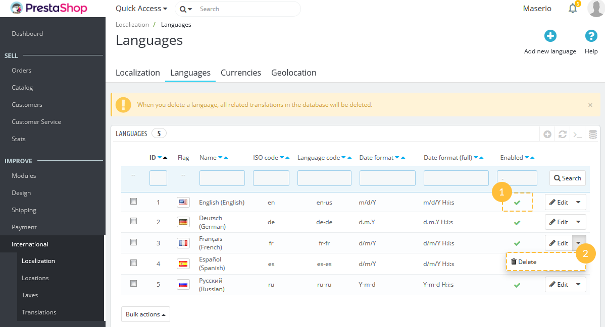
Modules installation
Each template is provided with some specific module settings. To make the modules
appear the same as on the demo preview, you will need to configure them. All modules
can be configured in the PrestaShop admin panel.
In your PrestaShop admin panel, select Modules > Modules and Services
from the
main menu.
The section id divided into 3 tabs - Selection, Installed
modules and Notifications.
Selection - selection of modules recommended for your shop (based
on your country, language and version of PrestaShop); it includes the most popular
modules from Addons marketplace, and free partner modules.
Installed modules - all the modules you’ve added to your shop,
either by buying it from PrestaShop Addons, or by uploading it directly.
Notifications - list of modules which require your attention: you
need to take some action to ensure they are fully operational (configure or update
them).
To install a module, open the 'Selection' tab, locate it in the list and click the
'Install' (1) button.
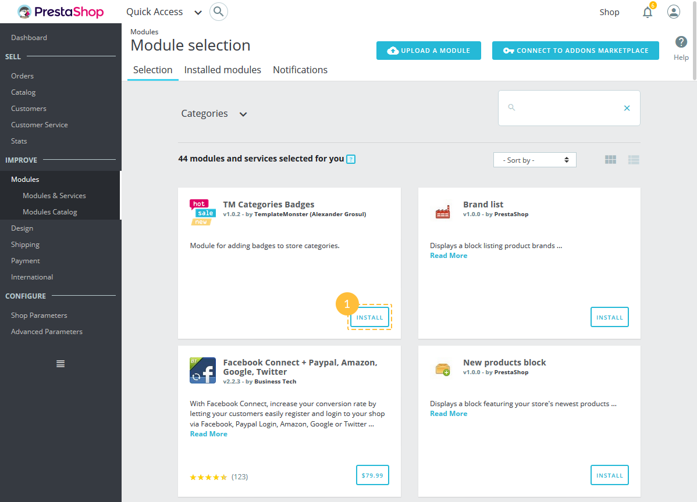
You can manage your modules in 'Installed modules' tab.
Using the module links you can configure it (Configure link), uninstall
the module (Uninstall
link), activate/deactivate them
(Enable | Disable links), or reset their settings to
default (Reset link).
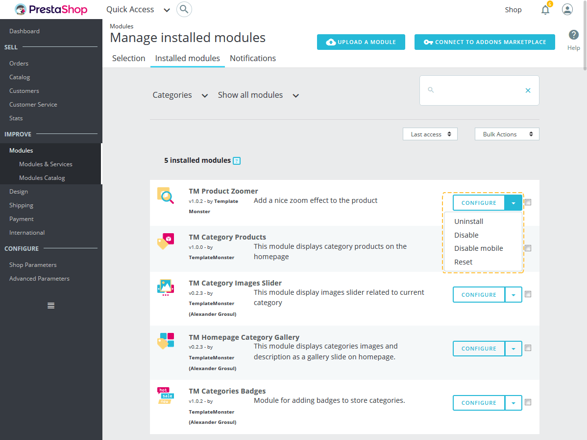
After activating the necessary modules, you need to assign
them to correct positions.
In PrestaShop admin panel, select Design > Positions from the top
menu. You can place a module in the required position by clicking the arrow buttons (1)
or dragging it up or down in the modules list.
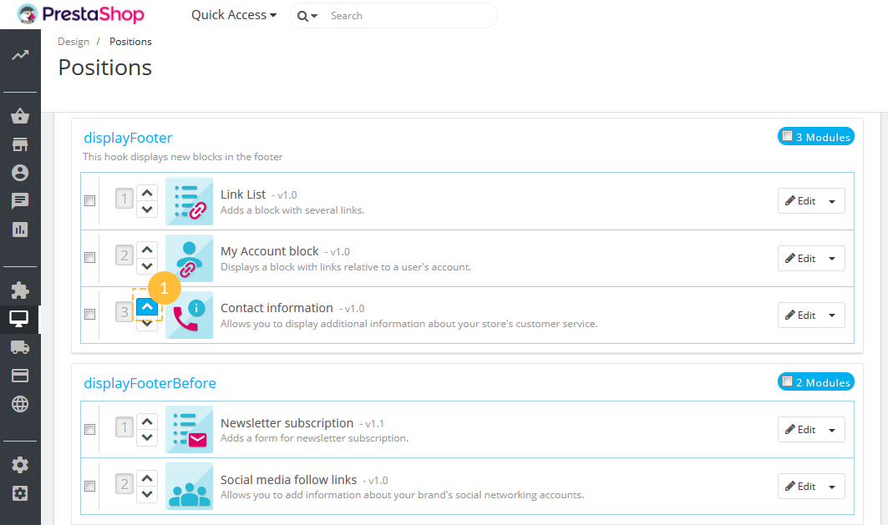
Configuring images
In PrestaShop you can use predefined image dimensions for product images, category
images, manufacturers, etc.
For example, images of the 'home' dimensions are usually used for
the product images on category listings, 'large' for main product
image on the product info page.
To configure product image dimensions, open your PrestaShop admin panel, go to
Design > Image Settings